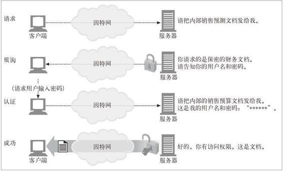
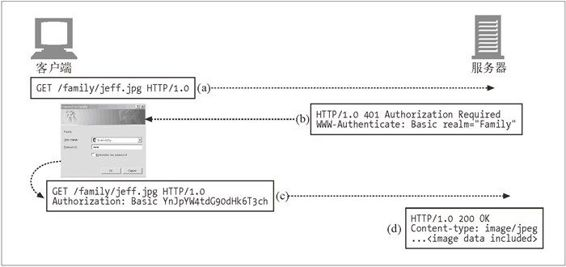
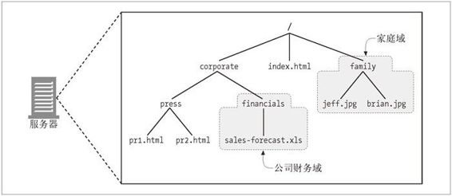

12.1 认证
认证就是要给出一些身份证明。当出示像护照或驾照那样有照片的身份证件时，就给出了一些证据，说明你就是你所声称的那个人。在自动取款机上输入 PIN 码，或在计算机系统的对话框中输入了密码时，也是在证明你就是你所声称的那个人。
现在，这些策略都不是绝对有效的。密码可以被猜出来或被人偶然听到，身份证件可能被偷去或被伪造，但每种证据都有助于构建合理的信任，说明你就是你所声称的那个人。
12.1.1 HTTP的质询/响应认证框架
HTTP 提供了一个原生的质询 / 响应（challenge/response）框架，简化了对用户的认证过程。HTTP 的认证模型如图 12-1 中所示。
Web 应用程序收到一条 HTTP 请求报文时，服务器没有按照请求执行动作，而是以一个“认证质询”进行响应，要求用户提供一些保密信息来说明他是谁，从而对其进行质询。
用户再次发起请求时，要附上保密证书（用户名和密码）。如果证书不匹配，服务器可以再次质询客户端，或产生一条错误信息。如果证书匹配，就可以正常完成请求了。

图 12-1 简化的质询 / 响应认证框架
12.1.2 认证协议与首部
HTTP 通过一组可定制的控制首部，为不同的认证协议提供了一个可扩展框架。表 12-1 列出的首部格式和内容会随认证协议的不同而发生变化。认证协议也是在 HTTP 认证首部中指定的。
HTTP 定义了两个官方的认证协议：基本认证和摘要认证。今后人们可以随意设计一些使用 HTTP 质询 / 响应框架的新协议。本章的其余部分将解释基本认证机制。摘要认证的细节请参见第 13 章。
表12-1 认证的4个步骤
| 步骤 | 首 部 | 描 述 | 方法/状态 |
|---|---|---|---|
| 请求 | 第一条请求没有认证信息 | GET | |
| 质询 | WWW-Authenticate | 服务器用 401 状态拒绝了请求，说明需要用户提供用户名和密码。 服务器上可能会分为不同的区域，每个区域都有自己的密码，所以服务器会在 WWW-Authenticate 首部对保护区域进行描述。 同样，认证算法也是在 WWW-Authenticate 首部中指定的 | 401 Unauthorized |
| 授权 | Authorization | 客户端重新发出请求，但这一次会附加一个 Authorization 首部，用来说明认证算法、用户名和密码 | GET |
| 成功 | Authentication-Info | 如果授权证书是正确的，服务器就会将文档返回。有些授权算法会在可选的 Authentication-Info 首部返回一些与授权会话相关的附加信息 | 200 OK |
为了具体地说明这个问题，我们来看看图 12-2。

图 12-2 基本认证实例
服务器对用户进行质询时，会返回一条 401 Unauthorized 响应，并在 WWW-Authenticate 首部说明如何以及在哪里进行认证（参见图 12-2b）。
当客户端授权服务器继续处理时，会重新发送请求，但会在 Authorization 首部附上加密的密码和其他一些认证参数（参见图 12-2c）。
授权请求成功完成时，服务器会返回一个正常的状态码（比如，200 OK）；对高级认证算法来说，可能还会在 Authentication-Info 首部附加一些额外的信息（参见图 12-2d）。
12.1.3 安全域
在对基本认证的细节进行讨论之前，需要解释一下 HTTP 是怎样允许服务器为不同的资源使用不同的访问权限的。你可能已经注意到了，图 12-2b 的 WWW-Authenticate 质询中包含了一个 realm 指令。Web 服务器会将受保护的文档组织成一个安全域（security realm）。每个安全域都可以有不同的授权用户集。
比如，假设 Web 服务器建立了两个安全域：一个用于公司的财务信息，另一个用于个人家庭文档（参见图 12-3）。不同的用户对各个安全域的访问权限是不同的。公司的 CEO 应该能够访问销售额预测资料，但不应该允许他访问员工和其家人度假的照片！

图 12-3 Web 服务器上的安全域
下面是一个假想的基本认证质询，它指定了一个域：
HTTP/1.0 401 Unauthorized
WWW-Authenticate: Basic realm="Corporate Financials"
域应该有一个描述性的字符名，比如 Corporate Financials（公司财务资料），以帮助用户了解应该使用哪个用户名和密码。在安全域的名称中列出服务器主机名也是很有帮助的——比如，executive-committee@bigcompany.com。